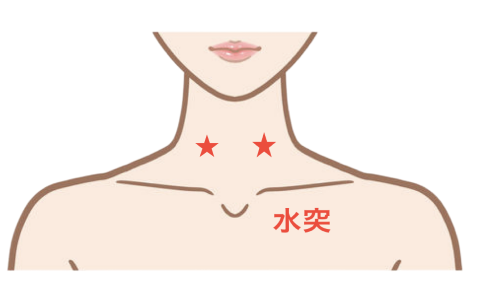

声帯炎の鍼灸
ウイルス感染や酷使で声帯が腫れて声枯れを起こす声帯炎に対し、専門医治療と安静を基本に回復を助ける鍼灸を行います。
まず知っておきたい要点と改善の流れ
声帯炎は、喉頭の中でも発声を担う声帯に炎症が起きて粘膜が腫れ、声枯れや失声を招く病気です。多くはウイルス感染による風邪の一症状（急性声帯炎）として発症し、大声の出し過ぎや喫煙、過度な飲酒も悪化要因になります。通常は耳鼻咽喉科での抗炎症薬・必要に応じた抗生剤の内服、うがい、加湿、そして無理に声を出さない安静によって1週間ほどで軽快します。強い痛みで水分が取れない場合は脱水予防のため早めの受診が必要です。（公式解説）
このようなお悩みはありませんか？
- ✓風邪をひいた後から声が枯れて高い声や細い声が出ない
- ✓声帯の腫れ感や喉の痛み、渇き・かゆみ・咳が続いている
- ✓重い時はほとんど声が出ず、会話や仕事に支障が出ている
- ✓炎症が落ち着いた後も喉の違和感や声の疲れが抜けにくい
当院の施術アプローチ・改善の流れ
なぜ鍼灸で改善へ向かうのか？（作用機序の図解）
声帯炎に対する鍼灸は、耳周囲・頸部の微小循環改善と聴覚・粘膜調整機序を通じて、お体本来の回復力を引き出します。

翳風・風池・合谷など、耳鼻咽喉領域の神経・血管と連動する経穴へ繊細にアプローチします。
首・顎まわりの深層筋緊張を緩め、内耳や粘膜周囲の滞った血流とリンパ循環を促します。
ストレスや睡眠不足で高ぶった交感神経を鎮め、音への過敏反応や粘膜の過剰反応を和らげます。
標準治療を妨げない設計で、生活支障度（THI等）の軽減と再発しにくい体調づくりを支えます。
院長YouTube解説・関連動画
声帯炎の原因は、ウイルスに感染することであることが多い
声帯炎の原因は、ウイルスに感染することであることが多いです。最初はウイルス感染だけでも、その後細菌感染が起きることもあります、
他にも、喫煙や過剰な飲酒も声帯に対して大きな負担をかけることになるため声帯炎の原因になります。
最近は、PM2.5や黄砂が悪い影響を与えているともいわれており、汚れた空気を吸うことも声帯炎につながるリスクになります。
過剰な声の使用:長時間、または高い音量で話すことで声帯に過度のストレスがかかり、炎症を引き起こすことがあります。教師、歌手、スポーツコーチなど、職業的に声を多用する人に多く見られます。
感染症:声帯はウイルスや細菌による感染症に影響を受けやすい部位です。上気道感染症が声帯にも影響を及ぼすことがあります。
喫煙:タバコの煙は声帯の粘膜を刺激し、炎症を引き起こす原因となります。
胃酸逆流（GERD）:胃酸が食道を逆流し、喉や声帯に到達すると、刺激により炎症が生じることがあります。
アレルギー:アレルギー反応によって喉に炎症が生じることがあります。これは特に、花粉やダニなどのアレルゲンに敏感な人に見られます。
乾燥した空気:乾燥した空気は声帯の粘膜を乾燥させ、炎症を引き起こしやすくします。
呼吸器系の病気:慢性的な呼吸器系の病気、例えば慢性気管支炎や喘息なども、声帯炎の原因となり得ます。
声帯の物理的な外傷:声帯に直接的な物理的な外傷が加わることで炎症が生じることがあります。
ツボの場所と押し方
少商の場所は、親指の爪のつけ根の外側です。
押すときは、親指と人差し指でつまむように揉みます。押したり離したりを１０秒ほど繰り返しましょう。

水突は、喉仏の斜め下で指幅１本分横の場所です。
押すときは、押しながら揉むようなイメージで行いましょう。ツボ周辺をマッサージすることもお勧めです。
列缺は、両手の親指と人差し指を交わらせたとき、人差し指の先端が当たる場所にあります。探すときは、手首の内側を触り親指側で動脈の拍動している所の手首から指3本分上に上がり少しへこんだ場所を探しましょう。
押すときは軽く押しましょう。
耳鼻咽喉のお悩みのツボ図解とセルフケア
実際の施術ではお一人おひとりの体質・症状に合わせて選穴しますが、耳鼻咽喉領域（アレルギー性鼻炎・耳鳴り・突発性難聴併用・顎関節症）の臨床でよく用いられる代表的なツボの目安です。

📌 代表的なツボの詳細一覧表を開く（6穴） ▼
| ツボ名 | 位置の目安 | 主な狙い | セルフケアの注意点 |
|---|---|---|---|
| 聴宮（ちょうきゅう） | 耳の穴の前（耳珠）のすぐ前、開口時のくぼみ | 耳鳴り・耳閉感・顎関節周囲の血流改善 | 口を軽く開けてごく優しく（顎痛時は無理に開けない） |
| 翳風（えいふう） | 耳たぶの後ろ、乳様突起と下顎骨の間のくぼみ | 耳鳴り・めまい・難聴ケア・耳周囲循環改善 | 顔面神経近接のため強圧を避け温め・軽圧で |
| 迎香（げいこう） | 小鼻の左右の膨らみのすぐ脇（ほうれい線上） | 鼻づまり・アレルギー性鼻炎の鼻腔通気改善 | 皮膚が薄いためこすらず指先で軽く押す |
| 印堂（いんどう） | 左右の眉頭のちょうど中央 | 鼻づまり・副鼻腔の重だるさ・自律神経鎮静 | 指の腹でゆっくり5秒圧迫または優しくさする |
| 下関（げかん） | 耳の前、頬骨のアーチの下縁のくぼみ | 顎関節症・咬筋の過緊張・耳周囲の放散痛緩和 | 圧痛が出やすいため痛気持ちいい手前の弱圧で |
| 完骨（かんこつ） | 耳後ろの硬い骨（乳様突起）の後下方のくぼみ | めまい・耳鳴り・胸鎖乳突筋〜後頭部の緊張緩和 | めまい発作時は頭を動かさず座位で軽く押さえる |
国際査読論文の科学的エビデンス
国際的な医学データベース（PubMed・Cochrane等）で報告されている耳鼻咽喉領域（アレルギー性鼻炎・耳鳴り・突発性難聴併用・顎関節症）領域の代表的な査読済み鍼灸研究をまとめています（標準治療との併用や研究上の限界を含めて正確に掲載）。
📚 査読論文データ・PubMed出典リンクを開く（4件） ▼
| 年・研究デザイン | 対象・規模 | 主な結果 | 限界・出典 |
|---|---|---|---|
| 2013年 大規模多施設RCT | 季節性アレルギー性鼻炎 422名（ドイツ） | 7〜8週のRQLQ QOLがシャム比0.5点・薬単独比0.7点改善（P<0.001）、頓用薬使用も有意減少（P<0.001）。 | 1年目16週では群間差消失、臨床的意義は慎重評価。 Ann Intern Med (PMID: 23420231) |
| 2021年 メタ解析 | 耳鳴り 8 RCTs（n=504） | 生活支障度THI（MD -10.11, p<0.001）・TSI（MD -8.36, p<0.001）が有意改善。VASは有意差なし（p=0.06）。 | 組入れRCTの質・サンプル規模に限界あり。 Acupunct Med (PMID: 32772848) |
| 2026年 ネットワークメタ解析 | 突発性難聴 36研究（n=3,360・標準治療併用） | ステロイド等の標準治療への鍼灸併用で総有効率RR 1.19（p<0.0001）、3週間コースが推奨。 | エビデンス確実性は低く標準治療（早期ステロイド）併用が前提。 Complement Ther Med (PMID: 42918509) |
| 2023年 メタ解析 | 成人顎関節症 22 RCTs統合（n=471） | 標準治療併用で有効率RR 1.36・疼痛VAS MD -1.23と有意改善。 | GRADE確実性は低〜非常に低、さらなる高品質RCTが必要。 Medicine (PMID: 37746950) |
参考文献・出典
- 銀座そうぜん鍼灸院「声帯炎の公式解説ページ」
- 2013年 大規模多施設RCT（季節性アレルギー性鼻炎 422名（ドイツ））— Ann Intern Med (PMID: 23420231)
- 2021年 メタ解析（耳鳴り 8 RCTs（n=504））— Acupunct Med (PMID: 32772848)
- 2026年 ネットワークメタ解析（突発性難聴 36研究（n=3,360・標準治療併用））— Complement Ther Med (PMID: 42918509)
- 2023年 メタ解析（成人顎関節症 22 RCTs統合（n=471））— Medicine (PMID: 37746950)
よくある質問（FAQ）
Q. 発熱や強い喉の痛みがある急性期でも受けられますか？▼
Q. 声が出ないときにささやき声なら話しても大丈夫ですか？▼
あわせて読まれる関連疾患（耳鼻咽喉のお悩み）
ある日突然片耳などが聞こえにくくなる感音難聴です。発症早期の耳鼻科ステロイド治療を最優先に、早期併用や回復期の耳鳴り・めまいをケアします。
実際には音がないのに耳の中で雑音が聞こえる状態です。耳の血流や自律神経・脳の過敏さを整えるケアで軽減を目指します。
声の使い過ぎで両側の声帯にタコのような硬まりができる声帯結節に対し、首喉の緊張を緩める鍼灸で発声をサポートします。
咽頭や喉頭の粘膜に炎症が起き、喉の痛みや咳、声がれを生じる病気です。重症化の兆候に注意しつつ回復と予防を支えます。
喉の口蓋扁桃に細菌やウイルスが感染して腫れや高熱が出る病気です。急性感染期は医療機関受診が最優先（鍼灸禁忌）で、回復期・再発予防を支えます。
鼻や喉に起こる急性の炎症（かぜ症候群）です。発熱時は受診と安静を優先し、回復期の長引く不調や体力回復を鍼灸でサポートします。
おひとりで悩まず、まずはご相談ください
銀座本院・川口・大宮・横浜・博多・田無の各院でご予約を承っております。